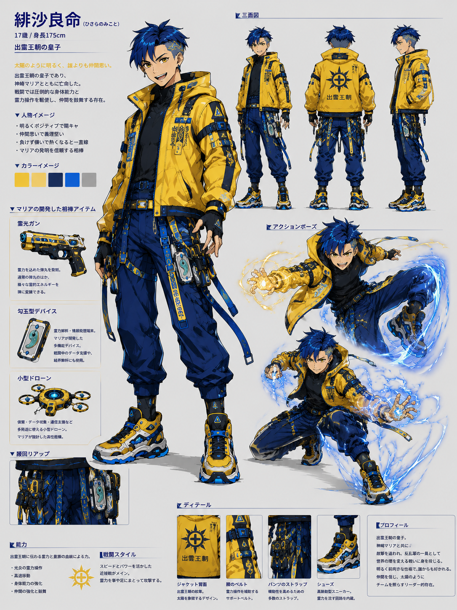

NOESIS
Official Codex
Top
World
Characters
Artifacts
Factions
Story
Timeline
Music
Images
Philosophy
Top
/
Characters
/ 緋沙良命
緋沙良命
大国主の血統を引く皇子。徐福との決戦でマリアを庇い、蓮と剛の戦う理由を残す。
Profile
役割
蓮の父 / 出雲王朝の皇子
年齢
未確定
所属
出雲王朝
能力
神聖戦闘 / 王族の霊力
武器
神聖戦闘
神器
出雲王朝の血統
テーマカラー
太陽 / 金
初登場話数
第二章 神崎マリア過去編
関連人物
神崎マリア / 神崎蓮 / 出雲王朝 / 徐福
テーマ曲
緋沙良命テーマ
Themes
太陽
希望
出雲
命を繋ぐ
Notes
徐福との頂上決戦で死亡
神崎マリアを庇った隙を突かれる
蓮と剛の戦う理由となる
Gallery

設定画
17歳・出雲王朝の皇子